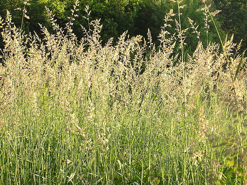

La planta de alpiste
La planta de alpiste, con nombre científico Phalaris canariensis, es una hierba que pertenece a la familia de las gramíneas (Poaceae). La planta es conocida también conocida como grano de Canarias . El alpiste es una planta que desarrolla todo su ciclo de vida durante el transcurso de un año, al finalizar el año la planta muere. La planta de alpiste puede medir hasta 120 centímetros de altura. 
El alpiste es originario de la zona mediterránea, pero en la actualidad su cultivo se ha desarrollado en varias partes del mundo, con el objetivo principal de producir semillas para la exportación. Estas semillas se utilizan principalmente para la alimentación de pájaros. Las principales características de la planta de alpiste son:
- La planta de alpiste presenta habitualmente entre 2 y 4 tallos cilíndricos.
- Los tallos presentan nudos en su longitud, no tienen pelos y son huecos, se asemejan a la caña.
- Las flores de la planta de alpiste se forman en una espiga.
- Las flores se agrupan en racimos y presentan un tono púrpura.
- Su fruto corresponde a un grano de forma ovalada de 5 milímetros en promedio. El fruto está cubierto por una pequeña cáscara de color marrón.
El cultivo del alpiste
En la actualidad, la planta de alpiste ha logrado ser cultivada en diferentes partes del mundo, en especial en aquellas donde no existen temperaturas muy extremas, durante el invierno y el verano. El alpiste es una planta que no tiene muchas necesidades en cuanto al tipo de suelo. Idealmente, para cultivar el alpiste se necesita plantar la semilla del alpiste primero en macetas, para dar una mayor protección a la semilla. La época ideal de la siembra de las semillas de alpiste es durante el otoño, de esta forma el desarrollo de la planta permitiría estar cosechando las semillas en la época del verano. La semilla del alpiste posee un tamaño muy pequeño, alcanzando tan sólo los 5 milímetros, debido a esto es recomendado sembrar las semillas a 1 o 2 centímetros de profundidad. Cuando la planta de alpiste ha alcanzado un desarrollo de unos 8 centímetros, puede transplantarse sin problemas al suelo definitivo. Se recomienda dejar una separación de unos 20 a 30 centímetros entre cada planta.